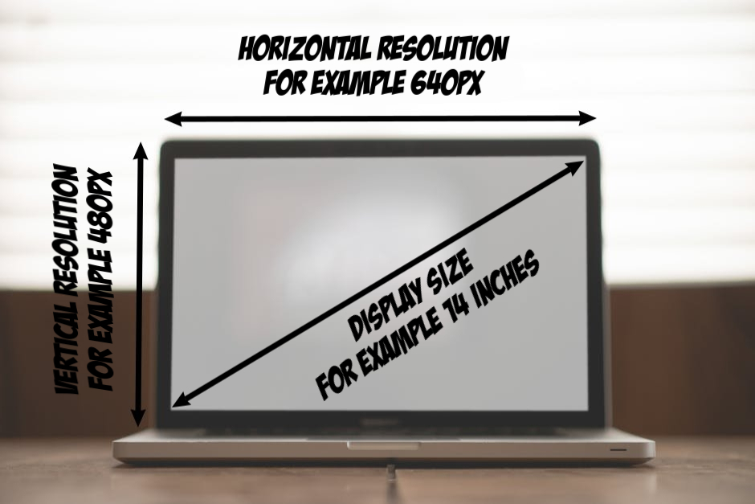
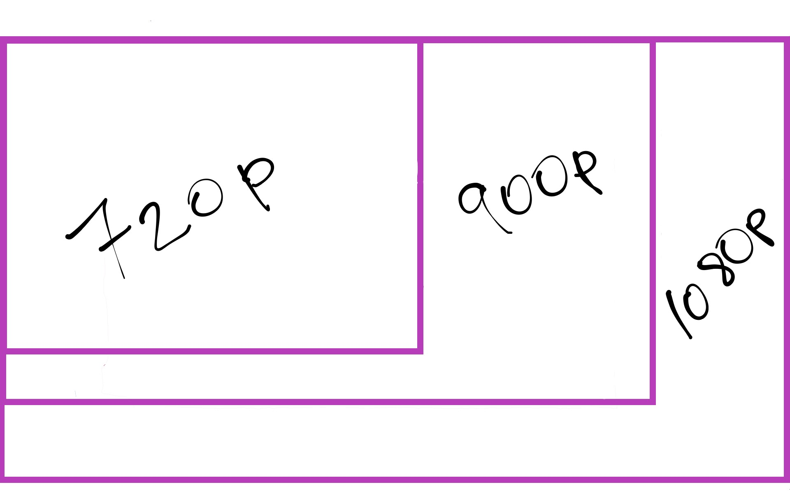
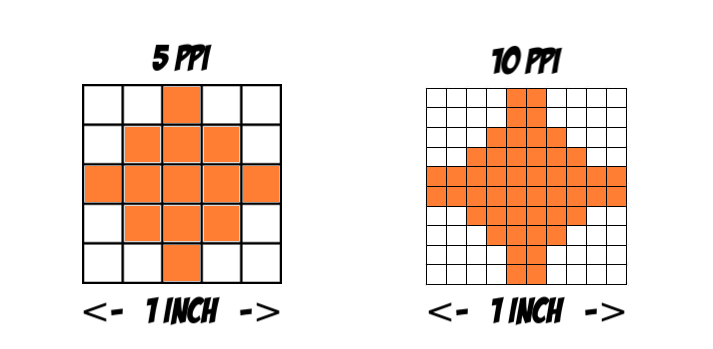

The three main properties of a display are its size, resolution, and pixel density. These properties generally dictate the cost of the display and the sharpness of the image on the display.
The display size is always measured as the length of the diagonal of the screen.
A pixel can be thought of as the atom of your display - the smallest element that can be displayed on your screen.
The resolution represents the number of horizontal and vertical rows of pixels on your display.
For example, if you have a 14 inch display with a resolution of 640x480, then you have a display with a diagonal length of 14inches, horizontal resolution of 640 pixels, and vertical resolution of 480 pixels.

Currently, the most common displays are 720p, 900p, and 1080p. The number represents the vertical resolution of the display. The p stands for progressive scan. It represents the way the image is displayed on the screen. For example, a progressive scan display at 60hz means the image on the screen is completely refreshed 60 times per second.
The alternative method of displaying an image is i for interlaced scan. It refreshes alternative rows of pixels as the given frequency. Thus, it takes two full cycles to refresh every pixel on the screen. Progressive scan is generally better and is the more common type found on computer displays. The difference between resolutions at 720p, 920p, and 1080p can be seen below.

The pixel density represents how many pixels there are in 1 square inch of your display - pixels per inch (PPI). The higher the pixel density, the sharper and clearer the image on your display.
If we had two displays of the same size, then the left image below represents a display with lower PPI compared to the image to the right.

Why does PPI matter? If you’re like most people, you spend a significant amount of time staring at some type of display – think about your phone, laptop, desktop, and TV. Also, think about your digital watch, microwave, billboard ads, self-checkout at the super market, credit card reader, etc. There are displays everywhere.
Displays are made for the devices they are going to be used on. For example, as a consumer, you use your TV differently from your laptop and phone. On average, people sit 7-8 feet away from their TVs compared to 2-4 feet from their laptops, and 1-2 feet from their phones.
If you’re ever in an electronics store and move up close to most TVs, let's say 2 feet, you will notice that the image produced from that distance is really pixelated compared to about 7-8 feet away. This is normal because you likely won’t be watching your TV from that close up. TV manufacturers know this and take the average viewing distance into account when designing your TV to reduce the cost of production. This is the same for your laptop or phone display. Since a display is created for a particular type of device, you should remember to compare apples to apples, that is laptop displays to other laptop displays.